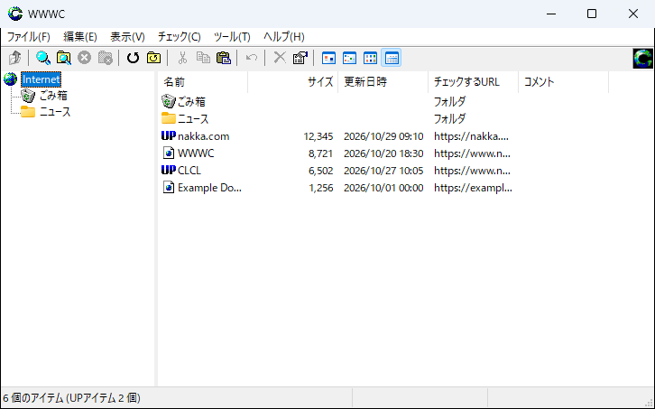
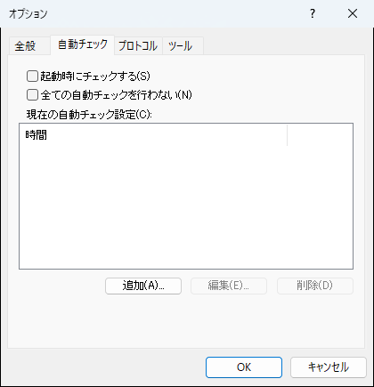
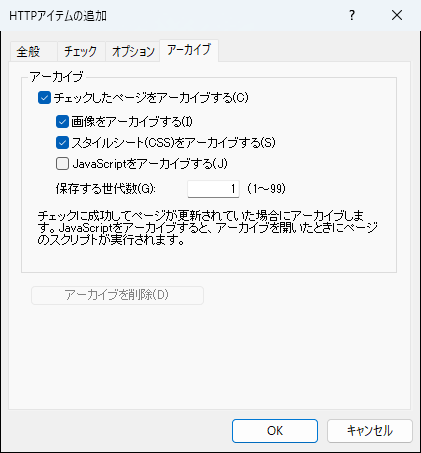

はじめに
WWWC とは？
WWWCはWindowsで動作するWebページの更新チェッカです。
よく見るWebページのURLをWWWCに登録しておくと、Webページに更新があったときに通知されます。
WWWCに登録してあるURLは最大30個同時を保ちながらチェック対象の全URLの更新チェックを行います。自分でブラウザを使用して更新されてないか見に行くより遥かに高速に更新のチェックを行うことができます。
基本的な使い方はWindowsに付属しているエクスプローラ（ファイルを操作するソフト）と同じ使い方です。
WWWCはフリーソフトウェアです。配布、転載は自由です、特に許可を取る必要はありません。

メインウィンドウ: 左がフォルダ、右がアイテムの一覧です。更新されたアイテムは「UP」のアイコンになります。
用途
- 情報を発信しているWebページをWWWCに登録して、そのWebページの更新をチェックすることができます。
- 使用しているオンラインソフトのWebページをWWWCに登録しておいて、そのオンラインソフトがバージョンアップしていないか調べることができます。
機能
- 指定の時刻や指定の間隔で自動的に更新チェックすることができます。
- チェックしたページをアーカイブして、後から以前の内容を見ることができます。
- 認証付きのページに対応しています。
- Proxyを使用した更新チェックができ、Proxyの認証にも対応しています。
- HTMLのMETAタグを使用して、更新日時やサイズ以外の更新情報を扱うことができます。
- ドラッグ＆ドロップでエクスプローラやブラウザとURLを交換できます。
- プロトコルのDLLを追加することによって色々なプロトコルをサポートすることができます。
- プラグインのDLLやツールを追加することによって機能を拡張することができます。
インストール
Windows 7, 8, 8.1, 10, 11で動作します。
インストーラ (wwwcバージョン.exe) を実行して、インストール先のフォルダとショートカットを作成する場所を指定してインストールします。
インストーラは管理者権限で実行します。既定のインストール先は「Program Files」の中の「WWWC」フォルダです。
設定とアイテムの情報は「%LOCALAPPDATA%\WWWC」(通常は C:\Users\ユーザ名\AppData\Local\WWWC) に保存します。
初めて起動するとこのフォルダ内にユーザ名のフォルダが作成され、ユーザ毎の設定内容が保存されます。
アンインストールはコントロールパネルの「プログラムと機能」(設定の「アプリ」) から行います。設定とアイテムの情報を削除するかどうかはアンインストール時に確認します。
Windowsの表示言語が日本語以外の場合は英語で表示します。
WWWCは、インターネットに接続できる環境というのが前提です。
チェック
アイテムをチェック主要機能
アイテムを選択して右クリックのメニューから「チェック」を選択すると選択されているアイテムの更新をチェックします。
チェックはツールバーやウィンドウメニューの「チェック」からもできます。
アイテムが選択されていない場合は現在開いているフォルダ内の全アイテムを更新チェックします。
フォルダが選択されている場合はそのフォルダの中のアイテムを更新チェックします。
しかし更に下の階層までは更新チェックしません。更に下の階層を更新チェックする場合は「階層チェック」を選択してください。
「チェック」で更新チェックを行う場合は「チェックしない」に設定しているアイテムやフォルダも更新チェックを行います。
すべてのアイテムをチェック
ウィンドウメニューのチェックにある「すべてのアイテムをチェック」を選択するとWWWCに登録されているすべてのアイテムを更新チェックします。
「エラーのアイテムのみをチェック」を選択するとWWWCに登録されているすべてのアイテムからエラーかタイムアウトになっているアイテム探して再チェックを行います。
「すべてのアイテムをチェック」「階層チェック」「エラーのアイテムのみをチェック」で更新チェックを行う場合は「チェックしない」に設定しているアイテムやフォルダは更新チェックを行いません。
更新メッセージ
更新チェックが終了すると更新メッセージが表示されます。
更新メッセージには今回の更新チェックでアイコンが「UP」になったアイテムが一覧表示されます。
更新メッセージかWWWC本体のウィンドウでアイテムをダブルクリックすると、そのアイテムを開きます。例えばHTTPのアイテムの場合はアイテムのURLをブラウザに表示させます。
アイテムを開くとアイテムのアイコンは自動的に初期化されます。
アイテムを開かずにアイコンを初期化したい場合は、初期化したいアイテムを選択して「アイコンを初期化」を選択することでアイテムのアイコンが初期化されます。
設定
全般
ウィンドウメニューの表示にある「オプション」を選択するとオプション画面が表示されます。
「全般」のタブではWWWC全般の設定を行います。
「すべてのユーザで共通のアイテム情報と設定を使用する」を設定すると別のユーザ名でWindowsにログインしても同じ設定のWWWCが使えるようになります。
WWWCはWindowsにログインしたユーザ名でアイテム情報と設定を管理しているため、別のユーザ名でWindowsにログインすると別の設定のWWWCになります。
別のログイン名でも同じ設定を使う場合にこの設定を有効にしてください。
「一度にチェックするアイテムの数」は同時チェック数の数で、ここで設定した数だけ同時に更新チェックを行います。
一つのアイテムのチェックが終わると次のアイテムのチェックを開始して、常にここで設定した数のチェック数を保ちます。
「タスクトレイにアイコンを表示する」を設定するとタスクトレイにアイコンを表示するようになります。ウィンドウを最小化するとタスクバーから消えるようになります。
「起動時にウィンドウを表示しない」を設定すると起動時にウィンドウを表示しないでタスクトレイのアイコンが表示されるだけになります。
更新時の動作で「メッセージを出す」を設定すると更新チェックが終わったときに更新アイテムが存在すると更新メッセージを表示します。
「音を鳴らす」を設定すると更新チェックが終わって更新アイテムが存在すると音を鳴らすようにします。鳴らす音を設定することもできます。
更に細かい表示や動作の設定を行いたい場合は、設定を保存するフォルダ (%LOCALAPPDATA%\WWWC) 内にあるユーザディレクトリ（Windowsにログインしたユーザ名）の中にある「user.ini」を編集することで可能です。
設定方法は「ini_sample.txt」を参考にしてください。設定を行うときは WWWC を終了しておいてください。
自動チェック
「自動チェック」のタブでは自動で更新チェックを行う時間設定を行います。
「追加」ボタンで新しい設定を追加することができます。複数の設定を登録可能です。
自動チェックで登録された時刻が来ると「すべてのアイテムをチェック」の動作を行います。
「起動時にチェックする」を設定するとWWWC起動時にすべてのアイテムのチェックを開始します。

「自動チェック」: すべてのアイテムをチェックする時刻や間隔を登録します。
フォルダのプロパティにもこれと同様の「自動チェック」の設定があります。
フォルダの自動チェック設定を行うと、そのフォルダはオプションの自動チェック設定が無効になり、フォルダで独立して自動チェックを行います。
分単位の自動チェック設定は行えません。メールのチェックなどで分単位で行いたい場合は、フォルダ毎の自動チェック設定を行ってください。フォルダ毎の自動チェックでは分単位の設定が行えます。
自動チェックの間隔が短いとそれだけサーバの負荷になります。更新チェックの間隔は長めにして必要以上に更新チェックを行わないようにしてください。
プロトコル
「プロトコル」のタブではWWWCで更新チェックを行うプロトコルを設定します。
「追加」ボタンでDLLを選択してプロトコルを追加します。
「編集」ボタンでプロトコル情報の設定を行います。プロトコル毎のアイコンの変更などが行えます。
「プロパティ」ボタンでプロトコル毎の設定を行います。例えばHTTPのプロトコルを選択して「プロパティ」ボタンを押すとProxyの設定などが行えます。
ツール
「ツール」のタブではWWWCを拡張するソフトやプラグインを登録できます。
「追加」ボタンでツール設定画面が表示されます。
ツール設定画面のファイル名で DLL を選択すると自動的にプラグインとして登録します。
EXE ファイルやその他の拡張子のファイルを選択すると実行オプションにしたがってファイルを実行するようになります。
ツール設定で指定できるコマンドラインは、アイテム毎の情報(1～8)とWWWC全体の情報(9～12)の2種類あります。
アイテム毎の情報は「アイテムのメニューに表示」にチェックがあり、アイテムのメニューから呼ばれた場合にのみ有効です。
アイテムメニュー以外からアイテム毎にツールを実行したい場合はプラグインを作成することで可能です。
「プロパティ」ボタンでプラグイン毎の設定を行います。プラグインではないツールではプロパティの設定は行えません。
DLL をWWWCにドラッグ＆ドロップすると、そのDLLに登録されているプロトコルとツールを一度に登録することができます。
HTTP
チェック方法
HTTP（“http://”や“https://” で始まるURL）は標準で更新のチェックができるようになっています。
HTTPアイテムのチェックでは通常「HEAD」というヘッダを取得するリクエストを送って、サーバが返してきたヘッダから更新情報を取得しています。
しかしWebページによっては、CGIやSSIなどを使って動的にページを作成していて更新情報を取得できない場合があります。
その場合は「GET」というページ全体を取得するリクエストを送って、取得したページのサイズで更新の有無をチェックします。
CGIやSSIなどを使って動的にページを作成しているページをチェックするのはサーバの負荷になりますので、必要なければ「チェックしない」アイテムとしてください。
どうしてもCGIやSSIなどを使って動的にページを作成しているページを更新チェックする必要があり、
毎回サイズが変わってチェックが行えない場合は「filter_sample.txt」を参考にして「filter.txt」を設定を保存するフォルダ (%LOCALAPPDATA%\WWWC) に作成することで、
チェックするページの毎回変わる部分を除去したり、新着情報部分を抽出して確実にチェックを行うこともできます。
- 「更新日でチェック」
- 更新日を取得できた場合に有効です。更新日が取得できない場合は自動的に無効になります。
- 「サイズでチェック」
- ヘッダからサイズを取得できた場合は、そのサイズでチェックを行います。
ヘッダから取得できない場合や、「HTMLタグを除いたサイズでチェック」が有効な場合や、フィルタが適用された場合にはページのサイズでチェックを行います。
- 「内容の変化でチェック(MD5)」
- 取得したHTMLをMD5で要約した値にしてチェックを行います。更新日が取得できて更新が無い場合は処理されません。
フィルタを組み合わせて特定部分の更新チェックを行うことが可能です。
- 「METAタグを使ったチェック」
- WebページにWWWCのMETAタグが埋め込まれている場合にこの設定を行うと、
METAタグに記述された内容でチェックを行い、更新日にMETAタグに記述された内容が表示されます。
WWWC以外のMETAタグの更新情報をチェックできるようにカスタマイズすることが可能です。
更新チェックを行うページがユーザ認証を必要とするページの場合は、アイテムのプロパティで「オプション」のタブを開き、「このURLはユーザ認証が必要」を設定してユーザとパスワードを設定してください。
対応している認証方式はBASIC認証(BASE64)です。
アイテムのプロパティの「オプション」のタブの「User-Agent」で、そのアイテムのチェックとアーカイブで送信する User-Agent を設定できます。空欄の場合は WWWC の User-Agent を送信します。半角の英数字と記号以外の文字は除かれます。
Proxyの設定
HTTPの設定はオプション画面のプロトコルのタブでプロトコル一覧から「HTTP」を選択して「プロパティ」ボタンを押して設定できます。
HTTPの設定画面からHTTPで使用するProxyの設定が行えます。
Proxyの設定は自動設定（“http://hoge/hoge.pac” のような感じ）には対応していません。
Proxyのサーバ名を直接指定してください。
LAN内にあるWebサーバなどはProxyを通さずに更新チェックを行う必要があります。
その場合は、アイテムのプロパティで「オプション」のタブを開いて、「プロキシを使用しない」を設定してください。
他にアイテムのプロパティで設定と違うProxyを使用するように設定することもできます。
アーカイブ主要機能
チェックに成功したページを、更新があった時 (またはまだアーカイブが無い時) にユーザディレクトリと同じ場所にある「ユーザ名.archive」フォルダに保存します。
アイテムのメニューの「アーカイブを開く」で保存したページを開けます。
アイテムのプロパティの「アーカイブ」のタブで、アーカイブするかどうか、画像、スタイルシート(CSS)、JavaScript を保存するかどうかと、保存する世代数を設定できます。
初期設定はアーカイブする、画像とCSSは保存する、JavaScript は保存しない、世代数は 1 (最新のみ) です。
同じタブの「アーカイブを削除」でそのアイテムのアーカイブを削除できます。

アイテムのプロパティの「アーカイブ」: 保存する内容と世代数を設定します。
認証が必要なページはアーカイブしません。アイテムに認証 (ユーザ名とパスワード) を設定した場合や、URL にユーザ名を含む場合はアーカイブを行いません。
画像、スタイルシート、JavaScript の設定を変更した場合は、既存のアーカイブを削除するか確認します。削除すると次のチェックで新しい設定のアーカイブを作成します。
JavaScript を保存しない場合は、ページ内のスクリプトやイベント属性を削除して保存し、アーカイブを開いたときにスクリプトが実行されないようにします。埋め込まれた他のページ (iframe) でもスクリプトは実行されません。
画像は前回から変更があった場合のみ取得し直します。世代数を 2 以上にした場合は、アーカイブを開くと保存した日時の一覧が表示されます。
「表示」→「オプション」→「プロトコル」で HTTP の設定を開き、「アーカイブ」のタブの「アーカイブを使用する」をオフにすると、すべてのアイテムでアーカイブを行いません。
ブラウザに表示
アイテムに設定されているURLをブラウザに表示するには、アイテムをダブルクリックすることでブラウザに表示することができます。
既にブラウザが起動している場合はそのブラウザに表示します。
アイテムをドラッグ＆ドロップで表示したいブラウザに渡すと、そのブラウザにアイテムのURLを渡します。
ブラウザで開くURL が設定されていれば、そのURLでブラウザに表示します。 ブラウザで開くURL が設定されていない場合はチェックするURLでブラウザに表示します。
新しいブラウザでURLを開きたい場合は、オプションのツールを登録する必要があります。
- オプションのツールで追加ボタンを押して Chrome、IE、Firefoxの場所を指定
- タイトルを「新しいブラウザで開く」という感じにする
- コマンドラインに %u といれる (Chromeの場合は「--new-window %u」といれる、Firefoxの場合は「-new-window %u」といれる)
- 実行オプションで「アイテムのメニューに表示」にチェックを入れて、適用するプロトコルで、http を入力
- ツールを実行したときにアイコンを初期化したいときは実行オプションの「実行後にアイコンを初期化する」にチェックを入れる
- [OK]ボタンを押して完了
以上の設定にて [新しいブラウザで開く] をメニューに追加することができます。
上記の新しいブラウザで開く動作をアイテムをダブルクリックしたときの動作にしたい場合はツール設定で「アイテムをダブルクリックで実行する」にチェックを入れてください。